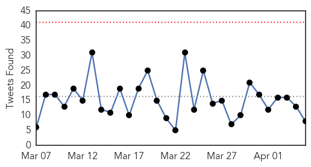
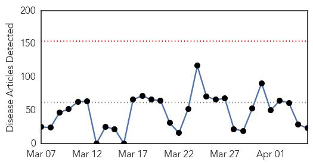
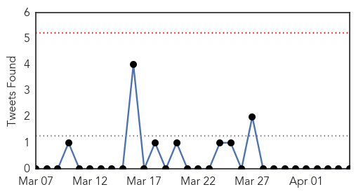

Ebola
30-Day Web Trend
0 alerts, 0 warnings

30-Day Twitter Trend
0 alerts, 0 warnings

Article Locations

Article Confidences
Top Articles:
- 1.000
- World warned: Prepare for more Ebola-like outbreaks
- 1.000
- Ontario patient tests negative for Ebola
- 1.000
- Ontario patient tests negative for Ebola
- 1.000
- UPDATE: Patient with Ebola-like Symptoms Tests Negative
- 1.000
- Ontario patient tests negative for Ebola
- 1.000
- Suspected Ebola patient being treated in Toronto - National
- 0.999
- Sierra Leone District Records First Ebola Case in Months
- 0.998
- Doctor tested for ebola, discharged from hospital
- 0.997
- Ebola: 'Low-risk' Barrie patient transferred to Sunnybrook for testing
- 0.997
- Ebola: 'Low-risk' Barrie patient transferred to Sunnybrook for testing
- 0.995
- Emails reveal WHO delayed declaring Ebola emergency due to political considerations
- 0.993
- Deadly Ebola Returns to Eastern Sierra Leone's Kailahun District
- 0.990
- News Talk 610 CKTB :: BREAKING: Barrie patient tests NEGATIVE for Ebola :: News News
- 0.989
- Patient in Toronto Tests Negative for Ebola
- 0.983
- Patient with Ebola-like symptoms transferred to Toronto hospital
- 0.980
- Modern Healthcare Modern Healthcare business news, research, data and events
- 0.977
- Dallas hospital seeks dismissal of nurse’s suit over Ebola
- 0.975
- Homeland Security News Wire
- 0.974
- Dallas hospital seeks dismissal of nurse's suit over Ebola
- 0.973
- Dallas hospital seeks dismissal of nurse's suit over Ebola
- 0.964
- RVH patient tests negative for Ebola
- 0.959
- This and other racist sexist emails have now been released in response to a public records request
- 0.948
- Bradford on Avon doctor puts himself on the frontline of Ebola fight
- 0.947
- Possible Ebola case at Barrie hospital, patient taken to Ebola response centre
- 0.914
- News Centre
- 0.908
- Health Ministry’s Post-Ebola ‘Transition Plan’
- 0.905
- Selfless service: Doctor credits God, strict protocol for his healthy return to U.S.
- 0.807
- Politicizing a national tragedy and national pain for whatever reason is inhuman and ungodly
- 0.576
- The Ebola orphans taking desperate measures to survive
- 0.524
- Iron Knights: Mission to Liberia a huge success, said officer who commanded Fort Bliss contingent
- 0.518
- The worst health risks aren’t what most think
Top Tweets:
- 0.982
- Ebola death reported in Sierra Leone region where epidemic originated - The Guardian http://t.co/xbj9j8wP1i ebola EVD
- 0.974
- Liberia's Nightlife Is Back Post-Ebola - Daily Beast http://t.co/V6x4WWuH7G ebola EVD
- 0.974
- Liberia's Nightlife Is Back Post-Ebola - Daily Beast http://t.co/Qq6jg4IB6O ebola EVD
- 0.950
- Patient isolated over possible Ebola symptoms in Barrie, Ont. - CTV News http://t.co/GezzdMEdIV ebola EVD
- 0.937
- Ebola: Patient tests negative after transfer to Sunnybrook - CBC.ca http://t.co/rJlVufkAy2 ebola EVD
- 0.920
- Race for Ebola vaccine heats up as cases slow - Toronto Star http://t.co/hiZWpbflYO ebola EVD
- 0.847
- Possible Ebola patient transferred to Sunnybrook for testing - Toronto Star http://t.co/iwnfxUfPyV ebola EVD
- 0.836
- World warned: Prepare for more Ebola-like outbreaks - The Independent http://t.co/AGIrpBvNvy ebola EVD
- 0.836
- Ebola: 'Low-risk' Barrie patient transferred to Sunnybrook for testing - CBC.ca http://t.co/aazwtwLlOU ebola EVD
- 0.706
- Texas Hospital Sued Over Ebola Training Seeks Dismissal Of The Lawsuit - Huffington Post http://t.co/xv20UwhZbU ebola EVD
- 0.579
- As of 1 April all counties in Liberia except Montserrado have passed 42 days without a confirmed Ebola case. EbolaResponse
Unknown
30-Day Web Trend
0 alerts, 0 warnings

30-Day Twitter Trend
0 alerts, 0 warnings

Article Locations

Article Confidences

Top Articles:
- 0.917
- Chicago Tribune
- 0.917
- Chicago Tribune
- 0.886
- CDC: Nasty flu season has peaked, is retreating
- 0.878
- Foodborne Bacteria Resistant to Drugs Found in US; Cases Linked to the Dominican Republic, Haiti & India
- 0.845
- More than 1.5 mn children to be immunised against Japanese encephalitis in Lao PDR with GAVI support – The Financial Express
- 0.821
- Partners Unite to Battle Brain Fever
- 0.774
- Kidney disease fear grips Ganjam village
- 0.751
- Drug-resistant shigella spreading around U.S.: CDC
- 0.748
- April marks Parkinson's disease Awareness Month
- 0.740
- Ban on import of catfish imposed
- 0.737
- Alabama Feral Hog Hunters Cautioned about Swine Brucellosis Outdoor News Daily
- 0.673
- The Westside StoryThe Westside Story
- 0.608
- Consuming Water At Your Own Risk
- 0.603
- TB cases detected at Des Moines high school
- 0.598
- Inside Morgellons, The Internet's Disease
- 0.591
- ALERT : Mysterious outbreak at 1st plain of Petit-Goâve
- 0.581
- Muslim leader calls for doubling number of mosques in France
- 0.571
- Italy rescues 1,500 boat migrants in less than 24 hours
- 0.569
- Treatments on the fly: Asia a top destination for medical tourism
- 0.530
- Pope decries religious persecution, Kenyan killings
- 0.521
- Palestinians threaten Israel with ICC over frozen funds
- 0.515
- Night owls run higher risk of health problems - Cleveland 19 News
- 0.514
- Canine Flu Spreading Around Northern Illinois
Top Tweets:
-
No tweets found for Apr 05, 2015